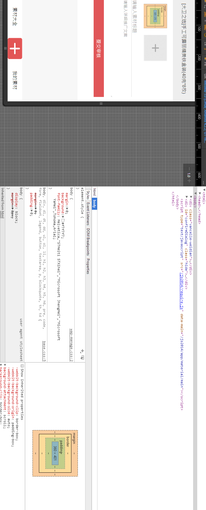

image-zooming
图片放大镜
始终显示放大镜
只在点击触摸时显示放大镜
使用方法案例:
<h1>始终显示放大镜</h1>
<img id="img1" src="a.png" alt="">
<p id="info1"></p>
<h1>只在点击触摸时显示放大镜</h1>
<img id="img2" src="a.png" alt="">
<p id="info2"></p>
<script type="text/javascript" src="../src/zepto.js"></script>
<script type="text/javascript" src="../src/image-zooming.js"></script>
<script>
$('#img1').ImageZooming({
times: 2,
always: true,
callback: function(a, b, c, d) {
$('#info1').html('x: '+a.x+' y:'+a.y);
}
});
$('#img2').ImageZooming({
times: 2,
always: false,
callback: function(a, b, c, d) {
$('#info2').html('x: '+a.x+' y:'+a.y);
}
});
</script>
或者requirejs
<h1>始终显示放大镜</h1>
<img id="img1" src="a.png" alt="">
<p id="info1"></p>
<h1>只在点击触摸时显示放大镜</h1>
<img id="img2" src="a.png" alt="">
<p id="info2"></p>
<script type="text/javascript" src="../src/zepto.js"></script>
<script type="text/javascript" src="../src/require.js"></script>
<script>
requirejs.config({
//By default load any module IDs from js/lib
baseUrl: '../src',
paths: {
$: 'zepto'
}
});
require(['image-zooming',"$"], function(ImageZooming,$){
var lz = new ImageZooming();
lz.init({
target: $('#img1'),
times: 2,
always: true,
callback: function(a, b, c, d) {
$('#info1').html('x: ' + a.x + ' y:' + a.y);
}
});
var lz2 = new ImageZooming();
lz2.init({
target: $('#img2'),
times: 2,
always: false,
callback: function(a, b, c, d) {
$('#info2').html('x: ' + a.x + ' y:' + a.y);
}
});
});
属性和方法
target dom|string
需要放大的图片对象（仅支持图片<img>）
times int
放大的倍数，默认是2倍
height: int
放大镜的高度，默认100px
width: int
放大镜的宽度，默认100px
always bool
是否始终显示，默认为false,这时，需要放大时，可以鼠标点击图片或触摸时才显示放大镜.
callback: function(a,b,c,d)
放大镜移动的回调方法，其中参数a是{x:11,y:11}的位置对象，b\c是要定位的位置对象，d是放大镜的dom对象